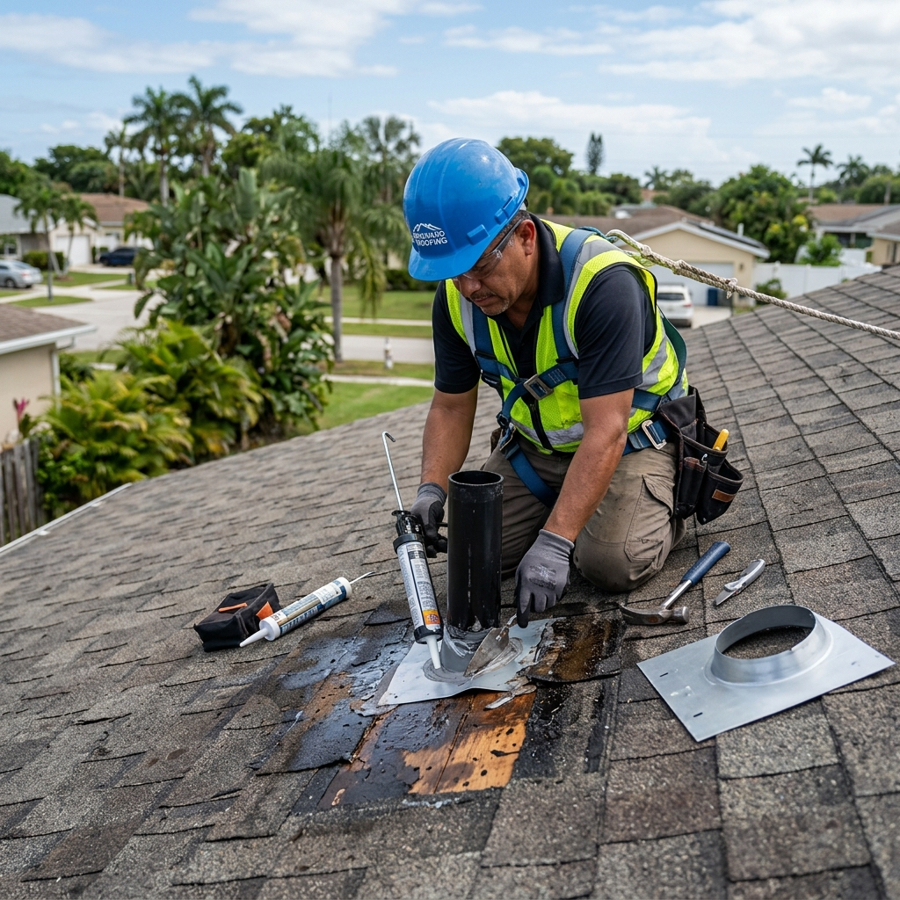

How Do You Handle a Sudden Roof Leak in Fort Lauderdale?
A sudden roof leak in South Florida requires immediate action to prevent interior water damage and structural issues. Homeowners should first catch active water leaks using buckets, move valuables to a dry room, and then contact a licensed roofing contractor to perform a professional roof inspection. Acting quickly protects your attic, ceiling drywall, and home insurance policy eligibility.

The Core Challenge of Hidden Water Intrusion in South Florida
Roof leaks in Broward County are rarely simple. Water often enters through a breach in the outer barrier and travels along rafters or insulation before dripping onto your ceiling, making the true source difficult to pinpoint from the ground. Ignoring a small damp spot can lead to extensive wood rot, compromised roof decking, and toxic mold growth within days under the South Florida heat. Securing your home against the elements means understanding the leak's origin and addressing the underlying structural damage before the next severe weather event.
Identifying Damaged or Lifted Shingles
High winds and intense UV exposure degrade shingle adhesive tabs over time, causing individual shingles to lift, crack, or blow away entirely. When shingles are compromised, rainwater easily bypasses the outer layer and pools on the underlayment below, starting a slow drip.
Pinpointing Flashing Failure Around Roof Penetrations
Flashing is the metal barrier installed around chimneys, plumbing vents, and valleys where roof planes intersect. If the sealant cracks or the metal rusts due to humid salt air, water finds an open pathway directly into your home's framing and attic space.
Recognizing Damaged Underlayment Beneath Tiles or Metal
In tile and metal roofing systems, the outer materials are highly durable, but the underlying asphalt or synthetic underlayment acts as the actual water barrier. If this underlayment degrades from age or thermal expansion, you will experience persistent leaks despite the tiles looking intact.
The South Florida Climate and Broward County Building Code Rules
Fort Lauderdale homes are subject to some of the strictest building codes in the nation due to our High Velocity Hurricane Zone (HVHZ) designation. Any roof leak repair must comply with the Florida Building Code, which often mandates specific materials, self-adhering underlayments, and wind-resistant fastening patterns. Furthermore, if water damage affects more than 25 percent of a roof section, local Broward County regulations may require a full roof replacement rather than a simple patch to ensure your home remains safe during hurricane season.
What to Do Next — Practical Steps for Homeowners
- Mitigate Interior Water Damage: Place large containers under active drips, clear furniture away from the area, and dry wet floors to prevent mold.
- Document the Damage Thoroughly: Take clear, high-resolution photographs and videos of the leaking ceiling, wet insulation, and any damaged personal property for your records.
- Verify Roof Credentials and Licensing: Ensure any contractor you contact holds active Florida licenses, specifically CCC1329271 or CGC1517295, and carries adequate liability and workers' compensation insurance.
- Schedule a Professional Roof Leak Inspection: Arrange for an experienced technician to perform a physical inspection of your roof deck, flashing, and attic structure to locate the leak's true source.
- Contact Your Homeowners Insurance Carrier: Report the active water intrusion to your insurer to determine if the cause of the leak is covered under your policy terms.
Frequently Asked Questions
How much does a typical roof leak repair cost in Fort Lauderdale?
The cost of fixing a roof leak in Broward County typically ranges from $350 to $1,500 depending on the severity of the damage, the roofing material, and the location of the leak. A simple flashing repair or single shingle patch is much less expensive than rebuilding a rotted section of roof decking, which is why scheduling an early inspection with a licensed contractor like Planet Roofing is highly recommended to keep costs low.
How long does it take to repair a standard residential roof leak?
Most minor residential roof repairs in South Florida can be completed in a single afternoon, taking between two to six hours once materials are on site. If the leak has caused extensive wood rot in the structural decking or rafters, the repair process may take two or more days to ensure the framing is safe and fully compliant with the Florida Building Code.
Can a homeowner perform a DIY roof leak repair safely?
Homeowners should avoid attempting DIY roof repairs due to the severe safety hazards of working on steep slopes and the risk of improperly sealing the area, which can lead to deeper, hidden water damage. Professional contractors have the specialized safety equipment and knowledge of local HVHZ codes required to ensure the repair is watertight and legally compliant.
Is a roof leak always covered by Florida homeowners insurance?
Whether insurance covers your repair depends on the cause of the leak, as sudden damage from storm winds or fallen branches is typically covered, while slow leaks caused by general wear, lack of maintenance, or old age are usually excluded. It is important to have a certified roofer document the damage with photos and a written report before filing a claim to provide clear evidence to your insurance adjuster.
When should a roof leak lead to a full roof replacement?
A roof replacement is generally necessary if the roof is near the end of its typical lifespan, has suffered widespread storm damage, or if the cost of ongoing repairs exceeds the value of a new system. Under the Florida Building Code, if more than 25 percent of a roof surface is damaged or repaired within a 12-month period, the entire roof must be updated to meet current hurricane-resistance standards.
Request a Free Roof Leak Inspection in Broward County
If you are dealing with a stressful roof leak, our experienced team of factory-certified technicians is ready to help protect your home. We provide fast, reliable leak detection and high-quality repairs that stand up to South Florida’s toughest weather conditions. We proudly serve Fort Lauderdale, Oakland Park, Wilton Manors, and all of Broward County with certified craftsmanship from GAF, CertainTeed, and Owens Corning. Call (954) 600-1462 today or submit our online contact form to schedule your free, no-pressure professional roof inspection.